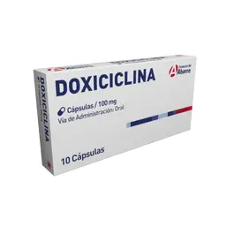
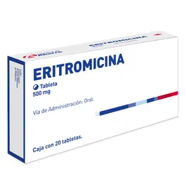

←
Inhibidores de la Síntesis Proteica


Mecanismo de Acción
- Subunidad 30S:
- Aminoglucósidos (ej. gentamicina, amikacina) Se unen de forma irreversible a la subunidad 30S ribosomal bacteriana → inhiben el inicio de la síntesis proteica y generan proteínas defectuosas.
- Tetraciclinas (ej. doxiciclina, tetraciclina) Se unen de forma reversible a la subunidad 30S → inhiben la unión del tRNA al sitio A del ribosoma → detienen la síntesis de proteínas.Efecto bacteriostático.
- Subunidad 50S:
- Macrólidos (ej. eritromicina, claritromicina, azitromicina) Se unen reversiblemente a la subunidad 50S ribosomal → inhiben la translocación del peptidil-tRNA → detienen la síntesis de proteínas.
Indicaciones Terapéuticas
- Subunidad 30S:
- Aminoglucósidos (ej. gentamicina, amikacina) Infecciones graves por bacterias gramnegativas aerobias (Pseudomonas, Enterobacteriaceae)
Sepsis, infecciones urinarias complicadas, intraabdominales, neumonía nosocomial
Endocarditis (en combinación con betalactámicos)
- Tetraciclinas (ej. doxiciclina, tetraciclina) Infecciones respiratorias atípicas (Mycoplasma, Chamydia, Legionella) Rickettsiosis, cólera, brucelosis, enfermedad de Lyme
Acné, rosácea
H. pylori (en esquemas combinados)
- Subunidad 50S:
- Macrólidos (ej. eritromicina, claritromicina, azitromicina) Infecciones respiratorias (neumonía, faringitis, bronquitis), Infecciones por Chlamydia, Mycoplasma, Legionella; Infecciones de piel y tejidos blandos, Erradicación de H. pylori (claritromicina), ITS: uretritis no gonocócica, sífilis (alergia a penicilina)
Contraindicaciones
- Subunidad 30S:
- Aminoglucósidos (ej. gentamicina, amikacina)
- Insuficiencia renal severa (ajustar dosis o evitar)
- Hipoacusia previa o trastornos vestibulares
- Miastenia gravis
- Tetraciclinas (ej. doxiciclina, tetraciclina)
- Niños menores de 8 años (manchas dentales, retraso óseo)
- Embarazo y lactancia
- Insuficiencia hepática grave
- Subunidad 50S:
- Macrólidos (ej. eritromicina, claritromicina, azitromicina)
- Alergia a macrólidos
- Prolongación del QT
- Uso concomitante con fármacos que prolongan el QT (cisaprida, amiodarona)
Posología
- Subunidad 30S:
- Aminoglucósidos (ej. gentamicina, amikacina)
- Gentamicina: 3-5 mg/kg/día IV/IM cada 8 horas
- Amikacina: 15 mg/kg/día IV/IM cada 24 h o dividido cada 12 h (ajustar según función renal y niveles plasmáticos)
- Tetraciclinas (ej. doxiciclina, tetraciclina)
- Doxiciclina: 100 mg cada 12 h el primer día, luego 100 mg cada 24 h
- Tetraciclina: 250-500 mg cada 6 h (VO)
- Subunidad 50S:
- Macrólidos (ej. eritromicina, claritromicina, azitromicina)
- Eritromicina: 250-500 mg cada 6 h (VO o IV)
- Claritromicina: 250-500 mg cada 12 h (VO)
- Azitromicina: 500 mg el primer día, luego 250 mg/día por 4 días (VO)
Reacciones adversas
- Subunidad 30S:
- Aminoglucósidos (ej. gentamicina, amikacina). Nefrotoxicidad (frecuente, reversible), Ototoxicidad (puede ser irreversible), Bloqueo neuromuscular, Reacciones de hipersensibilidad
- Tetraciclinas (ej. doxiciclina, tetraciclina). Fotosensibilidad, Trastornos gastrointestinales, Hepatotoxicidad (raramente), Disminución de crecimiento óseo/dental en niños
- Subunidad 50S:
- Macrólidos (ej. eritromicina, claritromicina, azitromicina). Trastornos GI (náuseas, vómito, diarrea), Hepatotoxicidad colestásica (eritromicina), Prolongación del QT, arritmias, Interacciones por inhibición de CYP3A4 (eritro y claritro)
Interacciones medicamentosas
- Subunidad 30S:
- Aminoglucósidos (ej. gentamicina, amikacina): Aumento de toxicidad con diuréticos de asa (furosemida)
- Riesgo de nefrotoxicidad con otros nefrotóxicos (vancomicina, AINEs)
- Tetraciclinas (ej. doxiciclina, tetraciclina). Disminuye absorción con antiácidos, lácteos, hierro. Potencia efectos de anticoagulantes
- Subunidad 50S:
- Macrólidos (ej. eritromicina, claritromicina, azitromicina)
Presentacións
- Subunidad 30S:
- Aminoglucósidos (ej. gentamicina, amikacina) Solución inyectable (IM/IV)
- Tetraciclinas (ej. doxiciclina, tetraciclina)Tabletas, cápsulas, solución oral e IV
- Subunidad 50S:
- Macrólidos (ej. eritromicina, claritromicina, azitromicina): Comprimidos, suspensión oral, cápsulas, solución inyectable